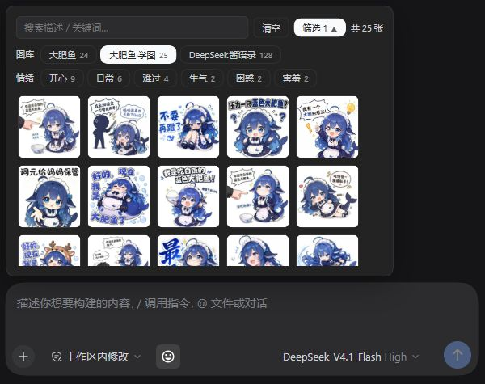

<!doctype html><meta charset="utf-8"><title>dsh-meme · styleframe</title>
<style>*{box-sizing:border-box}body{margin:0;background:#f5f5f7;color:#1c1c28;font-family:'Microsoft YaHei',system-ui}section{width:1920px;height:1080px;position:relative;padding:96px;overflow:hidden}small{font-size:42px;color:#4f6ef7}h1{font-size:120px;line-height:1.22;margin:80px 0 42px;letter-spacing:-4px}p{font-size:64px;color:#6b6b7b;margin:0;line-height:1.5}img{position:absolute;width:600px;height:600px;object-fit:contain;right:180px;top:230px;border:20px solid white;border-radius:42px;box-shadow:0 36px 80px #1c1c281a}.footer{position:absolute;bottom:88px;font-size:40px;color:#6b6b7b}.s2 img{width:1050px;height:830px;right:100px;top:150px;background:white}.s2 h1{font-size:96px}.s2 p{font-size:60px}.s3{text-align:center}.s3 h1{margin-top:150px}.cta{display:inline-block;margin-top:60px;padding:26px 54px;color:white;background:#4f6ef7;border-radius:28px;font-size:52px}</style>
<section><small>DeepSeek Harness · 表情包插件</small><h1>dsh-meme</h1><p>给 AI 聊天，<br>加点表情。</p><div class="footer">自己点图发 · AI 也能接着斗图</div></section>
<section class="s2"><small>01 / 一键发图</small><h1>想发哪张，<br>点一下。</h1><p>搜索 · 图库 · 情绪筛选</p><div class="footer">真实产品截图 · 深色主题</div></section>
<section class="s3"><small>开始斗图</small><h1>dsh-meme</h1><p>让聊天更有表情。</p><div class="cta">DSH → 插件 → 添加插件 → dsh-meme</div><div style="margin-top:50px;font-size:44px">github.com/yyh-001/dsh-meme</div></section>
